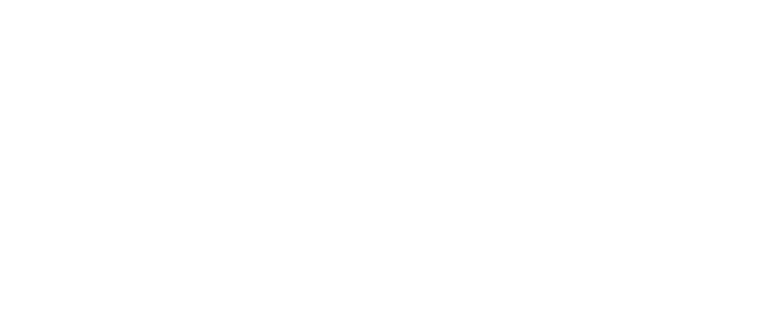
WAVE BEYOND THE SPATIAL FRAME / SLASH ACROSS THE SONIC LANE
突破傳統平面下落限制，結合高刷新率競技觸控與空間空氣感測外框，創造前所未有的立體全景沉浸體感：
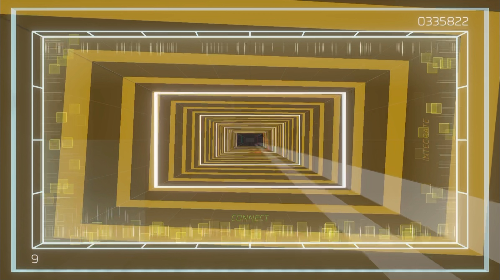
打破傳統 4K / 7K 平面單向掉落。音符從 24 軌全景深處沿著天花板、左右立壁與底層呼嘯而來，帶來無死角的沉浸節奏壓迫感與立體包圍感。
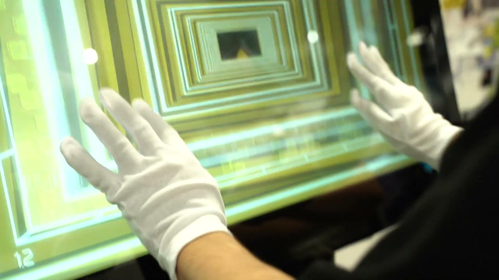
全球首創「螢幕內多點觸控」+「螢幕外實體空氣感測」的二元立體維度。玩家需在關鍵節奏將雙手揮出螢幕外緣切劃空氣，實現光學空中揮擊，創造極具觀賞性的肢體律動。
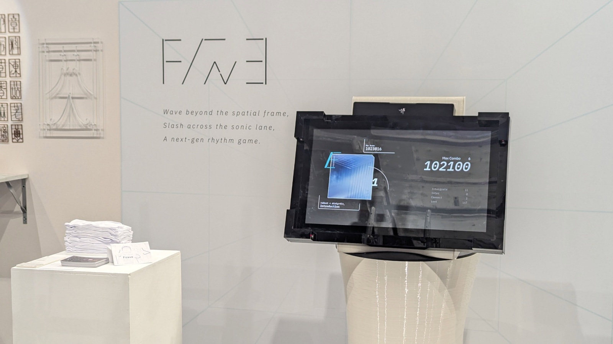
專為極限音遊打磨的低延遲、120Hz 高刷新率硬體架構，配合特製黑化金屬結構外框與 4 組對向式紅外線感測陣列，打造專屬於街機場館的聚客亮點與打擊反饋。
譜面採用 360 度環形 24 軌道空間佈局，配合高敏度觸控與紅外線感測陣列，由五種核心音符構成虛實交錯的打擊手感：
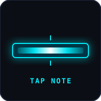
分佈於 24 軌道上的基礎點擊音符。帶有極光青中心指示線，支援雙押金色能量光核，考驗指尖在全景幾何上的極致精度。
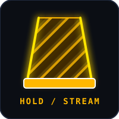
金色警示斜紋長條，沿著隧道四壁延伸與 90° 轉角平滑扭轉；具備獨家「動態幽靈避讓機制」，與 Tap 重疊時底層自動切換為 10% 半透明幽靈態，消除視覺盲區確保高密度讀譜零遮蔽。
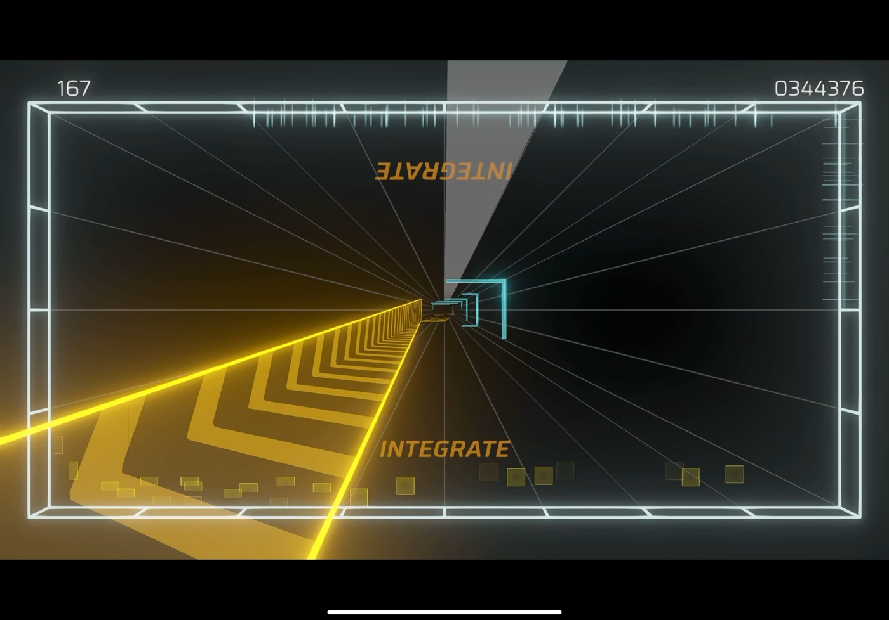
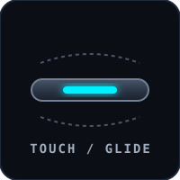
暗銀碳灰膠囊音符，被動碰觸即可判定。引導指尖於多軌道間順暢遊走，提供如絲般滑順的連續音階打擊反饋。
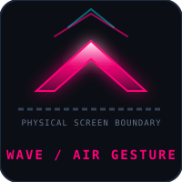
本作最核心的靈魂特色！ 機台四向外框嵌入高精準對向式紅外線雷射陣列，玩家需依節奏將雙手揮出實體螢幕邊框外緣切劃空氣完成判定，實現突破物理邊界、虛實交疊的立體空間手勢互動。
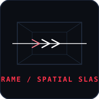
當音符觸及全屏切面時，玩家順應動態箭頭引導於 32 吋大面板全螢幕範圍內執行大跨度滑動斬擊，充分釋放大型街機無與倫比的肢體揮擊張力與感官衝擊。
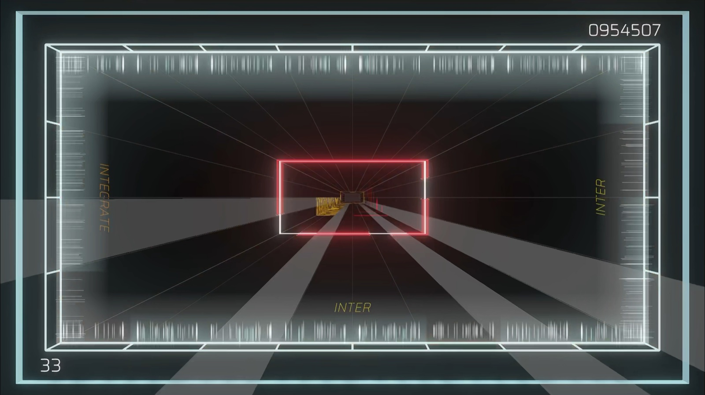
首發收錄原創電音、疾走琴音、公測魔王曲與音遊界頂級現象級神作《Aleph-0》，點擊任一曲目封面即可即時播放 15 秒高潮試聽：
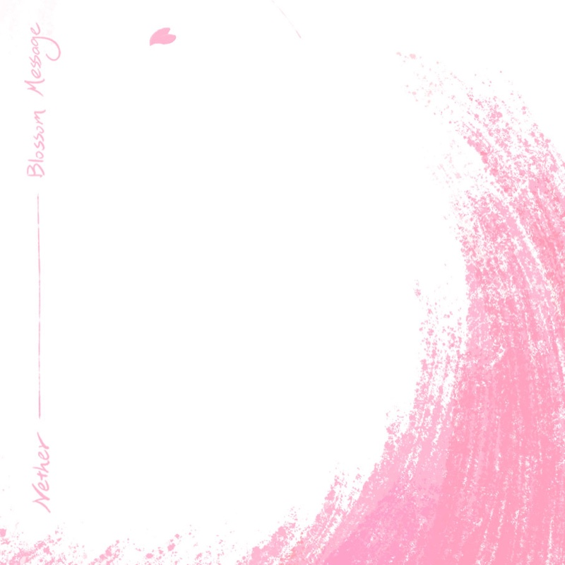
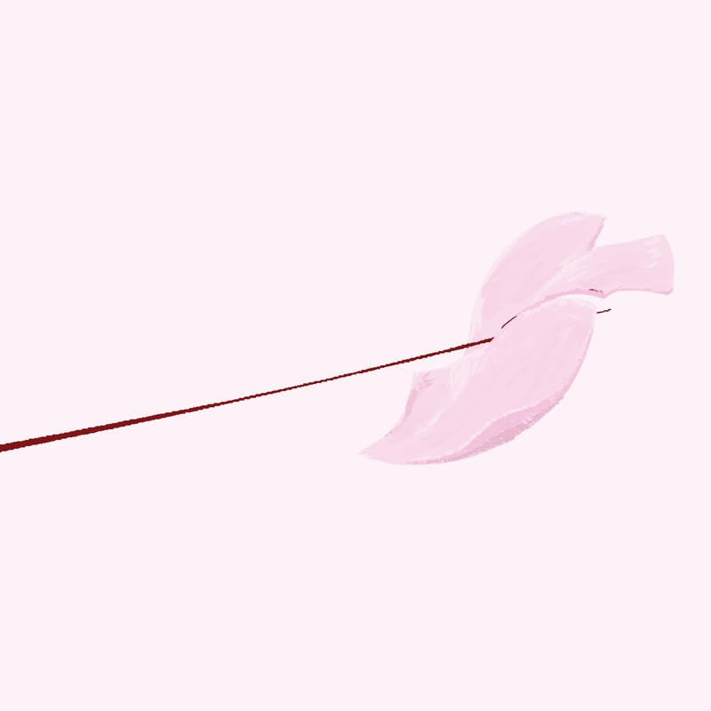
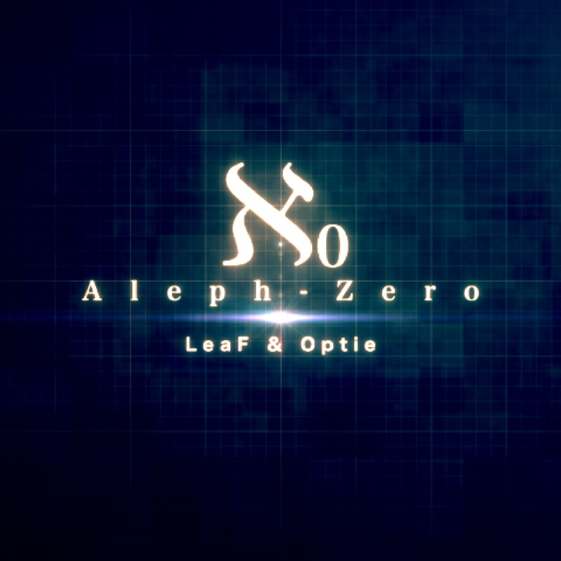
從零打造 1:1 獨立實體機台原型，於全台規模最大的「新一代設計展（YODEX）」公開展出並獲得廣大玩家狂熱排隊驗證：
從客製金屬結構、對向式紅外線感測陣列到底層 Unity 引擎完全自研打造。
展會期間連續數天高強度、數百名音遊核心玩家實機遊玩，系統零當機穩定運行。
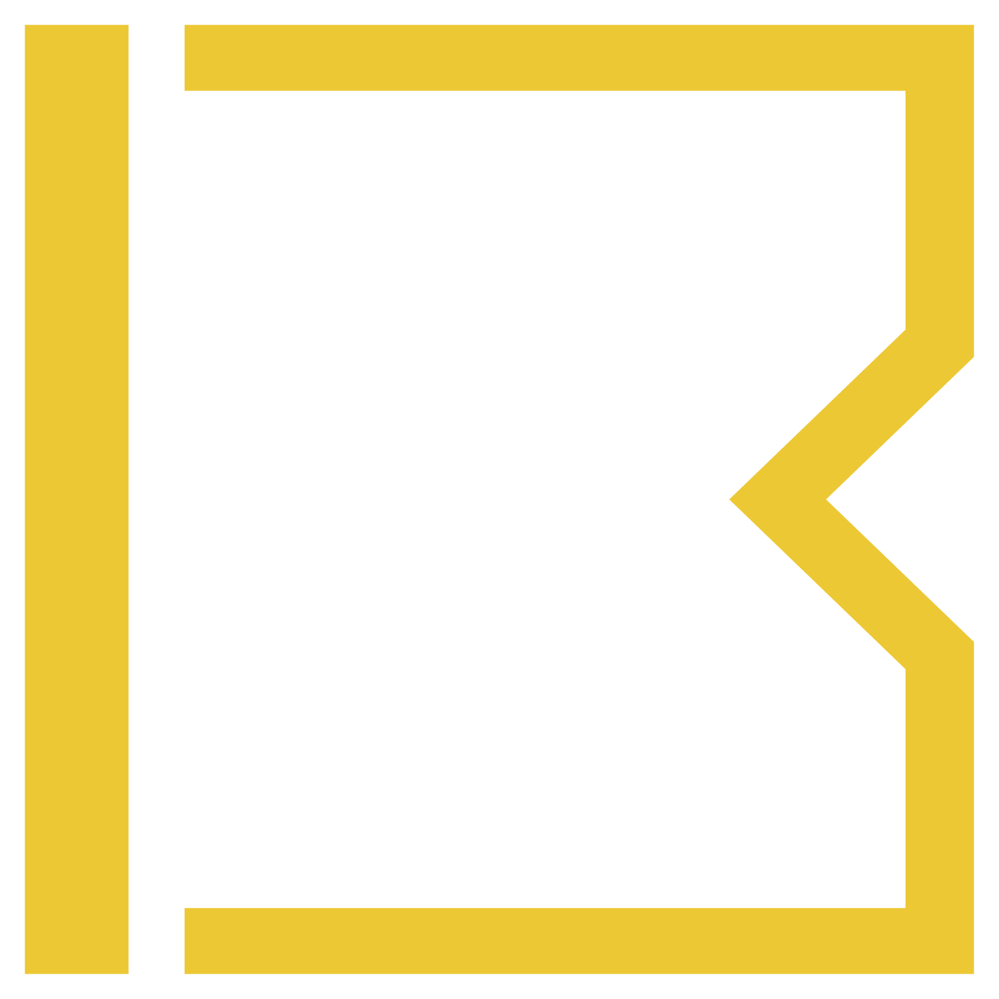
引入 Megabyte (MB) 等級與 ZL 滿分標章，激發硬核音遊愛好者現場連續刷榜熱潮。
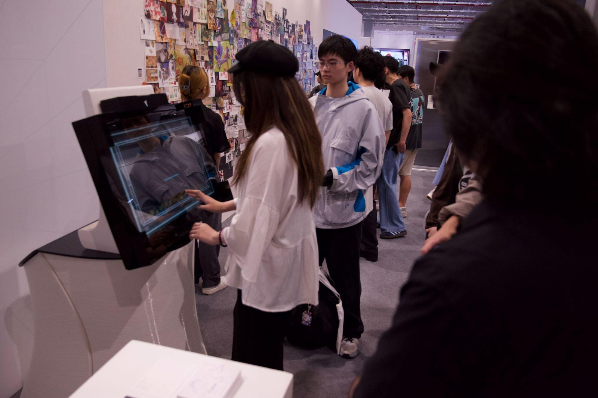
YODEX 現場試玩排隊人潮與圍觀盛況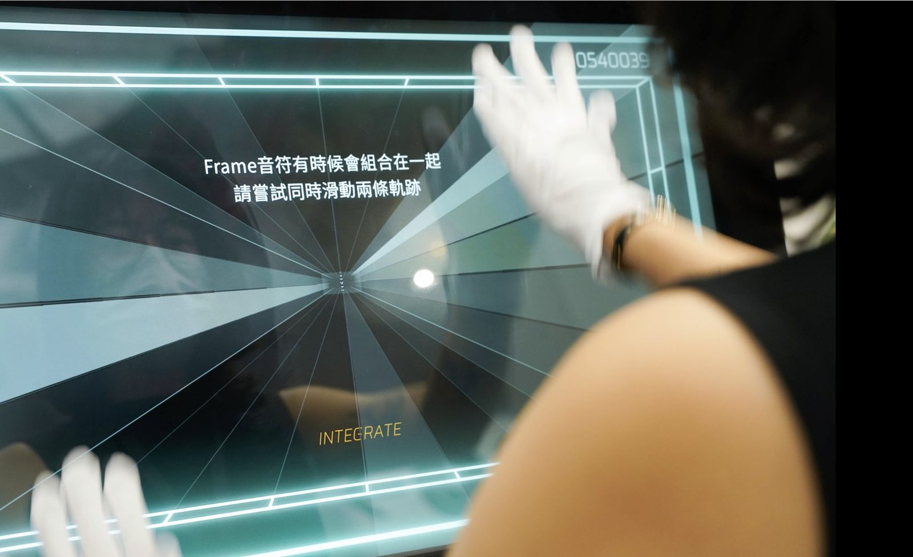
展台吸引大量音遊核心玩家連續駐足體驗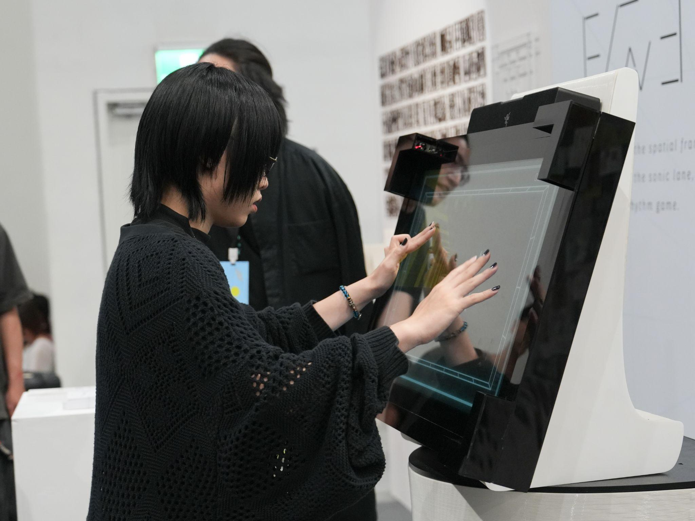
玩家現場雙手協同跨軌連續打擊實拍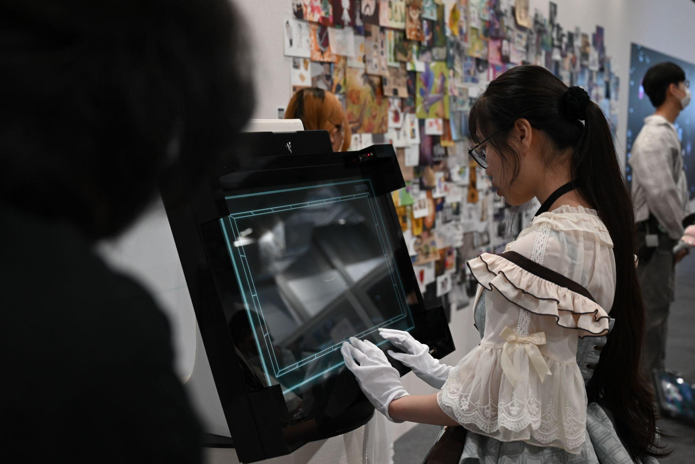
專業音遊玩家手套高速極限操作特寫向商業發行商與社群展示強大的後續內容持續產出能力，配備高度專業化的獨立工具鏈：
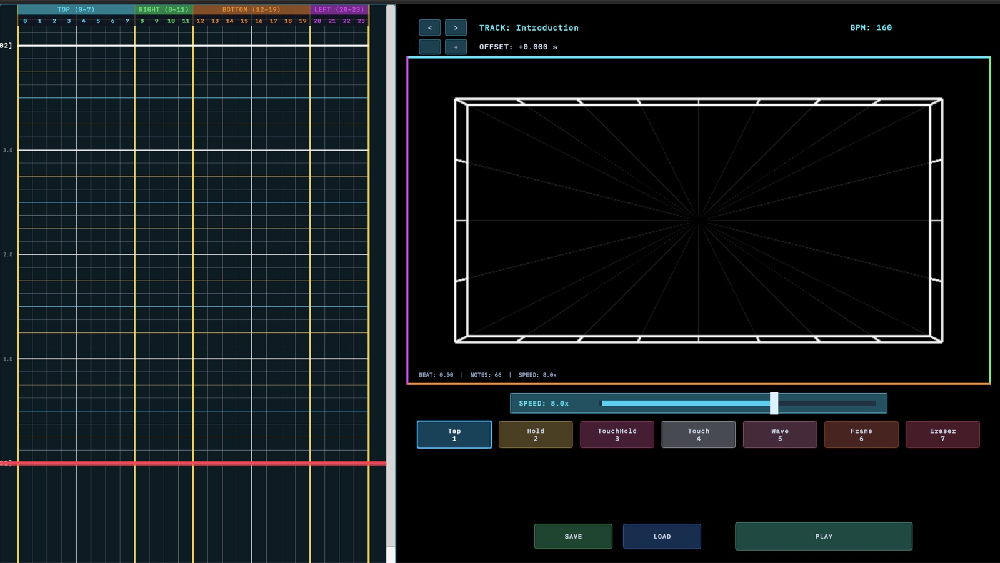
建構以結構化 JSON 為基礎的譜面管線，支援 24 軌 360° 全景即時預覽、動態音訊波形精準對位、獨立音符流速（Per-note velocity 0.25x~8x）調節與即時遊玩測試。
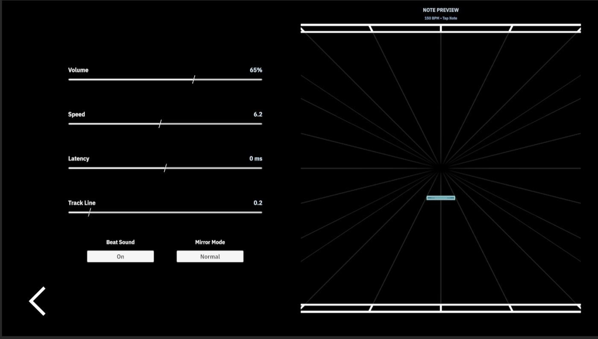
專為遊戲設定選單打造之 3D 渲染視窗，提供所見即所得的速度倍率、判定偏移與打擊音效調校，大幅降低玩家的設備與手感適應成本。
歡迎街機場館營運商、發行商、獨立音樂創作者與展會策展方洽談多元合作：
提供 1:1 實體街機原型機進駐合作方案、短期 Location Test 營運測試與收益合作模式。
歡迎原創音樂創作者、電子音樂廠牌授權樂曲收錄或共同策劃專屬聯名曲包。
海內外獨立遊戲展、數位娛樂大展實機出展邀約，以及商業化量產與發行洽談。
歡迎聯絡製作人 Mist_Wu (mistyr4in_) 討論合作細節。